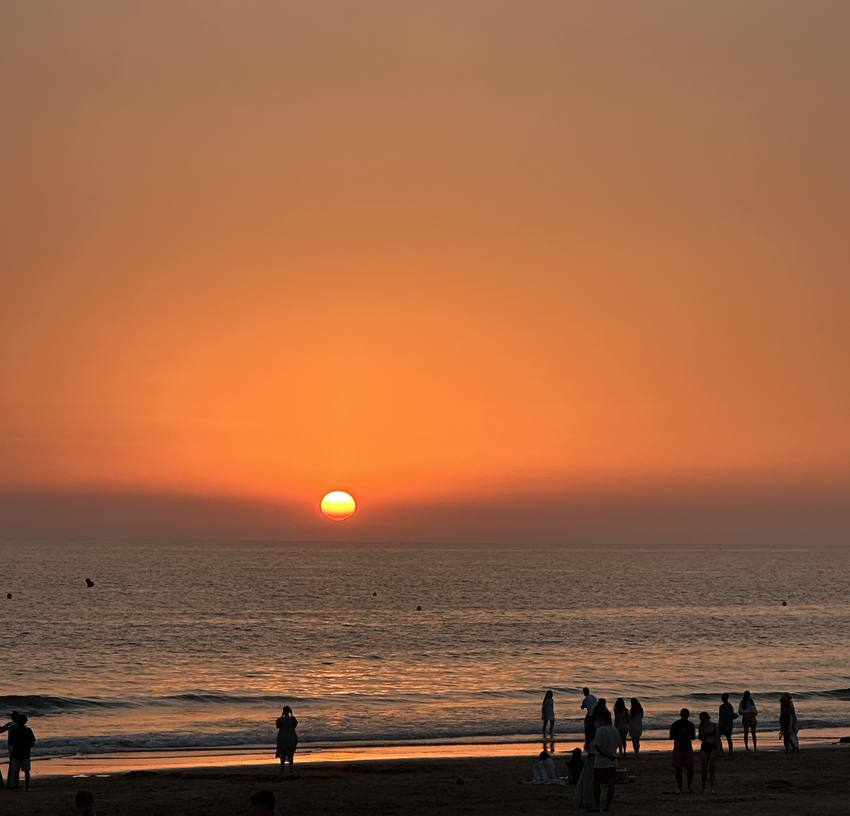
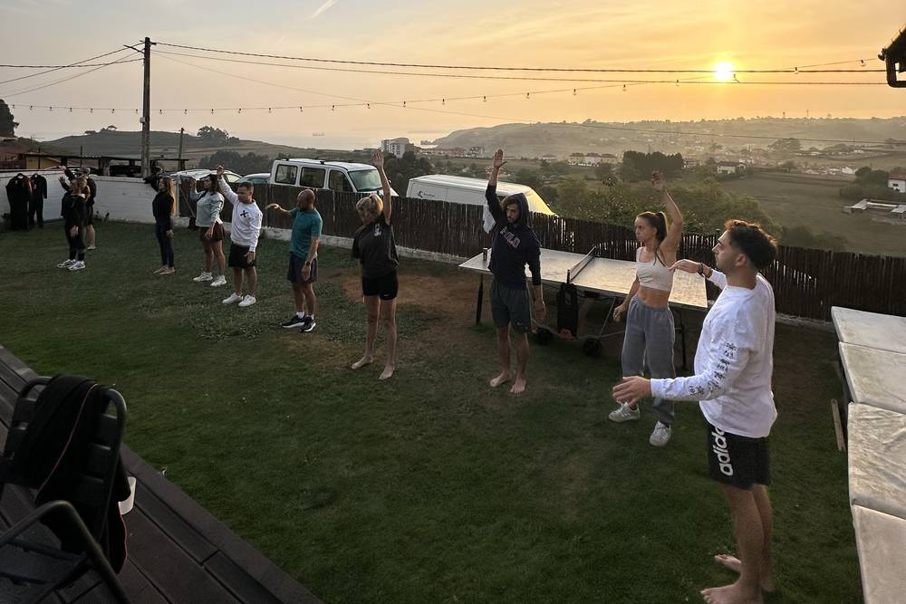
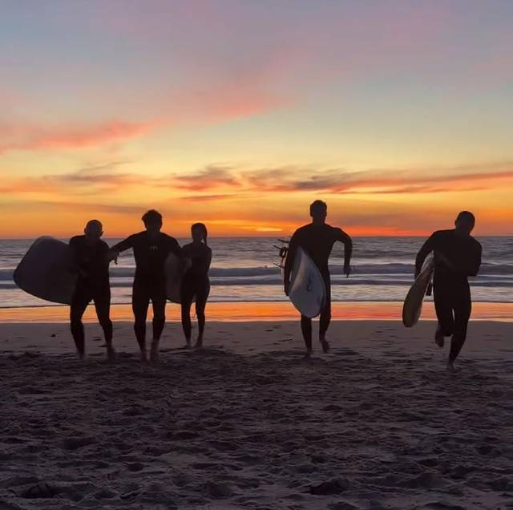
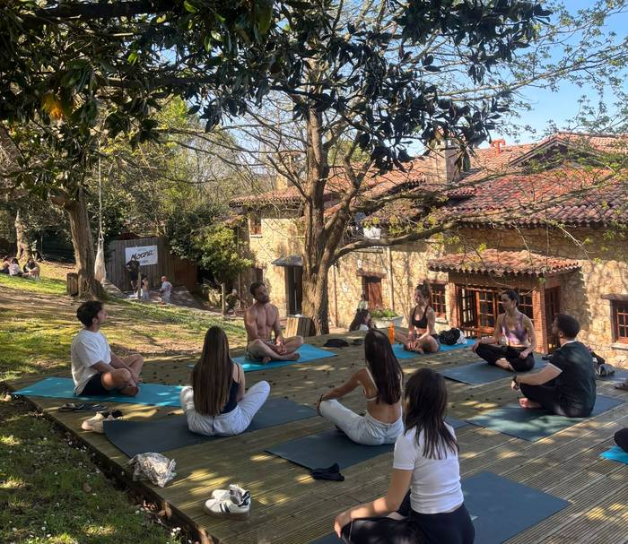
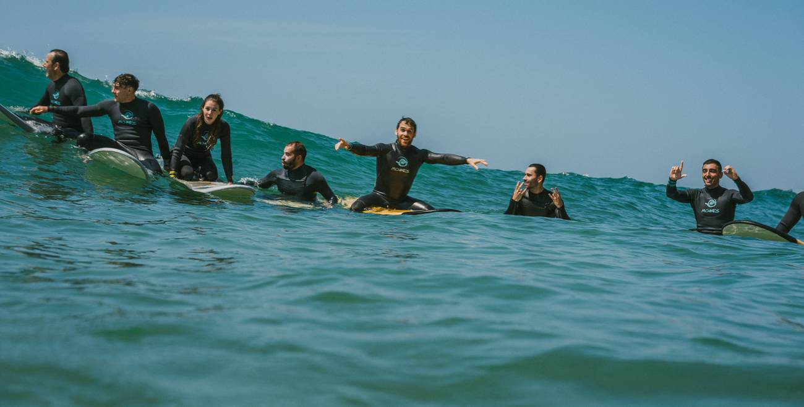
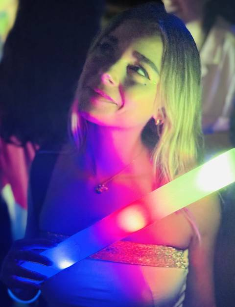
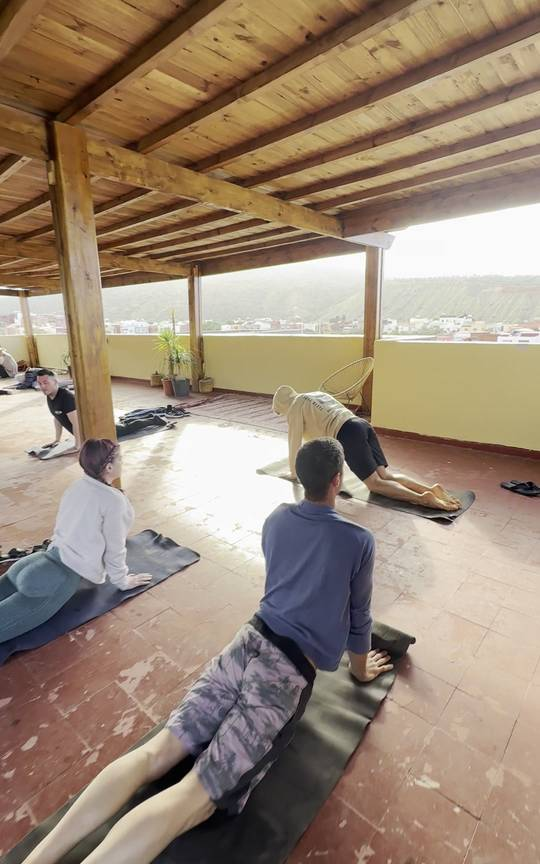
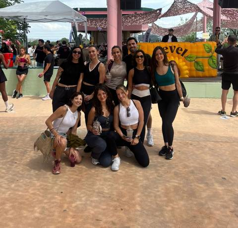

El jardín de la casa · aquí se desayuna y aquí empieza cada mañana
Miércoles, jueves y viernes. Cowork con foco, cocina en comuna, talleres y mar.


Se llega poco a poco. Deshacer la maleta, y al caer el sol, playa.
Desde las seis de la tarde. Se llega cada uno a su hora, sin prisa: no hay nada programado hasta el atardecer.
Dónde RuralSurf · Naveces, Castrillónver en el mapa ↗Quedamos allí para ver la puesta de sol y tomar algo en La Luna, el bar surfero de la playa. Vamos igual, seamos los que seamos. Y allí cenamos: hay burgers, pizzas y de todo para picotear.

Día entero: cowork por la mañana, cocina social al mediodía y tarde de disfrute, juernessss
Lo primero que hace el grupo junto, antes de desayunar. Opcional, pero engancha.
Se desayuna fuera, en el jardín de la casa. No está incluido: comprad antes de venir, o a cien metros hay una cafetería, típico bar de pueblo, que se llama Casa Demetrio.
Silencio productivo, a lo que hemos venido. Quien no tenga que trabajar: surf opcional o mañana libre.
Un rato de pie y en corro para contar en qué anda cada uno ahora mismo. No es presentarse: es enterarse de lo que hacen los demás y llevarse algo.

Nos organizamos con los coches, vamos a comprar y cocinamos todos juntos. De aquí sale la comida y la cena del día, y el gasto se reparte entre todos. Se come en grupo y sin prisa: es parte del plan, no un trámite. Y aquí empieza el juernes.
Cada uno trae un reto de los suyos y sale con él resuelto.

Quien tenga que currar, cowork. El resto: surf opcional, taller de surf skate o la tarde para ti.
Ruta andando hasta la playa para ver la puesta de sol desde allí. Lleva zapatillas que te valgan para andar por el monte.
La cena sale de la compra del grupo, como la comida. Y después, un juego que no se cuenta antes.
La misma mañana que el jueves, y comida fuera. Con esto se despide la previa: por la tarde empieza el finde.
Otra vez fuera, como ayer.
Igual que el jueves: quien no tenga que trabajar, surf opcional o mañana libre.
Hoy el parón no es contar en qué andas: es la dinámica de propósito.
Salimos a comer a un sitio de la zona. Confirmamos cuál unos días antes.
Que nunca te quiten tu vibra

El agua de Naveces · dos clases el sábado, la de despedida el domingo
Del viernes por la noche al domingo. Surf por niveles, espicha asturiana, fiesta de disfraces y gimnasia natural al levantarse.



Llega LiveOkey. El check-in es a partir de las ocho de la tarde, y de ahí ya no se para hasta el domingo.
Aquí arranca el finde. El check-in es directamente en El Cruce, en Naveces, al lado de RuralSurf.
Dónde El Cruce · Naveces, Castrillónver en el mapa ↗Agua por la mañana y por la tarde, espicha asturiana al caer
el día y fiesta de disfraces para acabar.
Horas por confirmar

En el finde, incluido.
Por niveles, en tandas con monitor. Ya sabemos en qué grupo va cada uno por lo que pusiste en el formulario.
Mismos grupos que por la mañana.
Cena de pie, sidra y comida asturiana de la tierra.
A cada uno le ha tocado su temática por privado y es secreto: nadie sabe de qué va nadie hasta el sábado. Hay premio al mejor disfraz — y al peor.
Último baño, comida tranquila y vuelta a casa.
Horas por confirmar
La de despedida.
Confirmamos la hora con el grupo. Desde Naveces a Madrid son unas cinco horas.
Los desayunos, comidas y cenas del miércoles al viernes van por cuenta de cada uno. Hacemos una compra conjunta, se reparte el gasto y cocinamos juntos: no tienes que traer nada de casa.
Del viernes por la noche al domingo, las comidas entran con LiveOkey. Ahí no hay que organizar nada.
Quien tenga el suyo, que lo traiga. Al resto se le alquila allí, con la talla que pusiste en el formulario. No hay que hacer nada.
La casa está en Naveces, concejo de Castrillón. Desde Madrid son unas cinco horas en coche. Si vienes en tren o en avión a Avilés o Gijón, dínos la hora y lo cuadramos con los coches.
La casa RuralSurf · Navecesver en el mapa ↗Si te surge una duda, si llegas a otra hora o si algo no te cuadra, escribe a Abraham por el grupo de WhatsApp y lo miramos.
No es dejarlo todo.
Es empezar algo.
